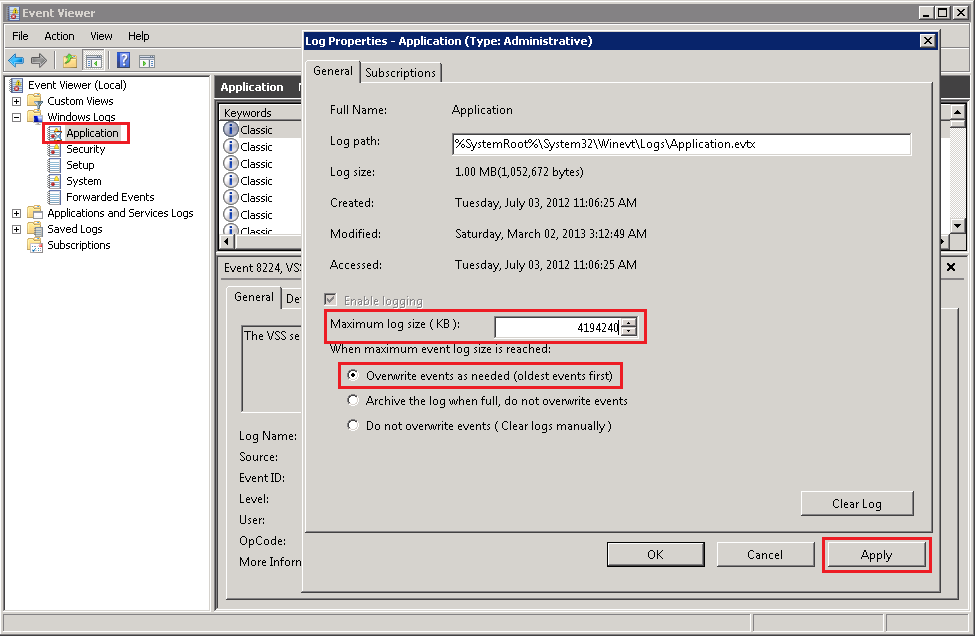
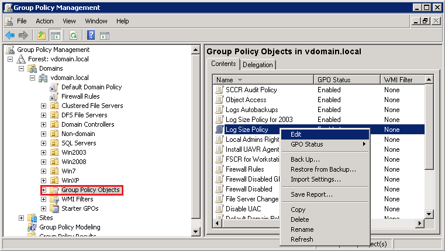
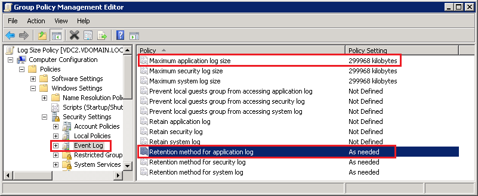
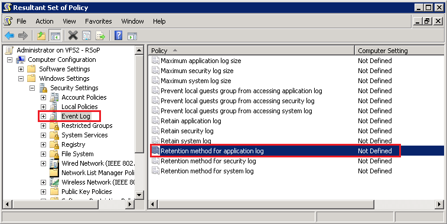
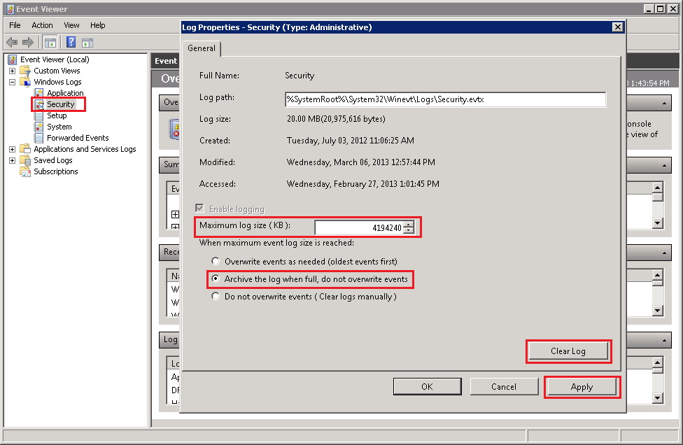
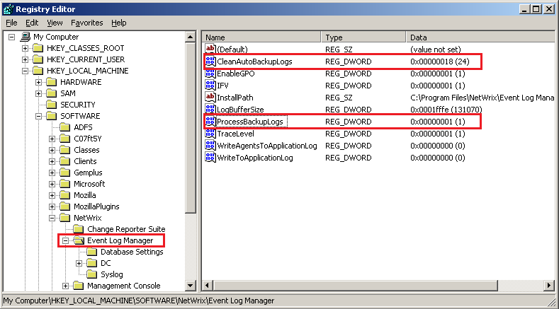

Netwrix Event Log Manager shows the following errors:
The product is configured to collect the event data at the preconfigured intervals (every 10 minutes by default), but the real frequency of the data collections depends on the number of new events in the logs of monitored servers. If the target event log is configured to Overwrite events as needed and the Maximum log size of the event log does not allow keeping all events between the data collections, the program cannot find the last collected event in the target log and detects that some events were lost. There are several reasons why the error occurs:
Procedure 1: Increase Maximum log size on the problematic server.
[WARNING] <Event log name> log overwrites occurred on this computer
since the last collection. Please increase the maximum size of the
<Event log name>. Last collected event: 02/28/2013 18:23:14 (GMT);
first new event: 02/28/2013 18:37:15 (GMT); estimated loss: 1 hour(s). Cannot find last
stored event.
The product is configured to collect the event data at the preconfigured intervals (every 10 minutes by default), but the real frequency of the data collections depends on the number of new events in the logs of monitored servers. If the target event log is configured to Overwrite events as needed and the Maximum log size of the event log does not allow keeping all events between the data collections, the program cannot find the last collected event in the target log and detects that some events were lost. There are several reasons why the error occurs:
- The target event log is configured to keep 20480 Kb of events by default and that is not enough to keep all generated events between the data collections. Refer to Procedure 1 and 2 to increase the maximum event log size.
- The target event log has been cleaned up manually by the system administrator. In this case for Application log, you may see the following information in the warning message: first new event: 01/01/1970 00:00:00 (GMT); (see example screenshot).
NOTE: for Security and System event
logs, you can figure out who cleared the log if you can find the appropriate event in the
log:
- System event log: "The System log file was cleared." event (Event ID: 104);
- Security event log: "The audit log was cleared." event (Event ID: 1102);
- Application event log: there is no way to find out who cleaned up the Application event log.
- The target event log overwrites events faster than the program collects them (often occurs with Security event log). Refer to Procedure 3 and 4 to configure the problematic event log to Archive events when full.
- The target event log is configured to Archive events when full, and Event Log Manager is not configured to process event logs archives. Refer to Procedure 4 to configure Event Log Manager.
Procedure 1: Increase Maximum log size on the problematic server.
- Log on to the problematic server and launch Event Viewer: Click Start, Run and type "eventvwr.msc" without quotes and press Enter.
- In the left-hand panel of Event Viewer, navigate to the problematic log, and then right-click it and select Properties.
- In the Properties window, change Maximum log size to 4194240 (Kb) as recommended by Microsoft: http://support.microsoft.com/kb/957662 IMPORTANT: Before changing Maximum log size, make sure that the system drive has enough free space to store the event log of the maximum size. If not, the event log will grow and fill up all free space on the system drive and the system will stop responding.
- Make sure the Overwrite events as needed option is selected and click Apply.

Procedure 2: Increase Maximum log size via Group Policy
Object.
- Go to Start / Administrative Tools / Group Policy Management
- In the window displayed, go to Group Policy Management / Forest Name / Domains / Group Policy Objects / right-click the appropriate policy (or create new) and select Edit. Group Policy Management Editor starts.

- In the left pane, go to Computer Configuration / Policies / Windows Settings / Security Settings / Event Log. Right-click Retention method for <problematic event log>, choose Properties.
- In the Security Policy Setting tab, check the Define this policy setting box and select Do not overwrite events (clear log manually). Click OK.
- Right-click Maximum <problematic event log> size, choose Properties.
- In the Security Policy Setting tab, check the Define this policy setting box and set the size to 4194240 Kb as recommended by Microsoft: http://support.microsoft.com/kb/957662 IMPORTANT: The affected machines must have enough free space on their system drives for storing the event log of the maximum size. If not, the event log will grow and fill up all free space on the system drive and the system will stop responding.

- Close Group Policy Object Editor and link the configured GPO to the required OUs and containers in Group Policy Management.
- OPTIONAL: Upgrade the group policies on the problematic servers by performing the following command: gpupdate /force
- On the problematic server, click Start / Run, type rsop.msc and press Enter.
- When the Resultant Set of Policy is processed, expand Computer Configuration / Windows Setting / Security Settings / Event Log.
- Make sure that the Retention method for <problematic log> policy setting has the Not Defined or Manually value set. If not, change this setting using Group Policy Management Editor as described in Procedure 2.

4. Perform the following steps:
4. Perform the following steps:
- Click Start / Run, type eventvwr.msc and press Enter. The Event Viewer window will be displayed.
- Expand the Windows Log node, right-click Security and select Properties.
- In the Maximum Log Size field, set the following value: 4194240 (Kb).
- Select the Archive the log when full, do not overwrite events radio button.
- Click the Clear Log button. Click the Apply button.

NOTE: These maximum sizes are recommended by Microsoft:
http://support.microsoft.com/kb/957662
IMPORTANT: Before you changed Maximum log size and
enabled the Archive events when full option, make sure that the system
drive has enough free space to store the event log and log"s backup files of the maximum
size. If not, the event log will grow and fill up all free space on the system drive and
the system will stop responding.
- Perform the steps from Procedure 4 to allow the product to collect and to clear the log"s backup files.
- On the computer that has Netwrix software installed, Click Start / Run, type regedit and press Enter. The Registry Editor window will be displayed.
- Expand HKEY_LOCAL_MACHINE/SOFTWARE/NetWrix/ (HKLM/Software/Wow6432Node/NetWrix/ for a 64-bit operating system) and click the Event Log Manager key.
- Change the values of the following keys:
- ProcessBackupLogs set to 1,
- CleanAutoBackupLogs set to X (if you want the archives to be removed when all events in them are older than X hours, for example: 24 hours).
